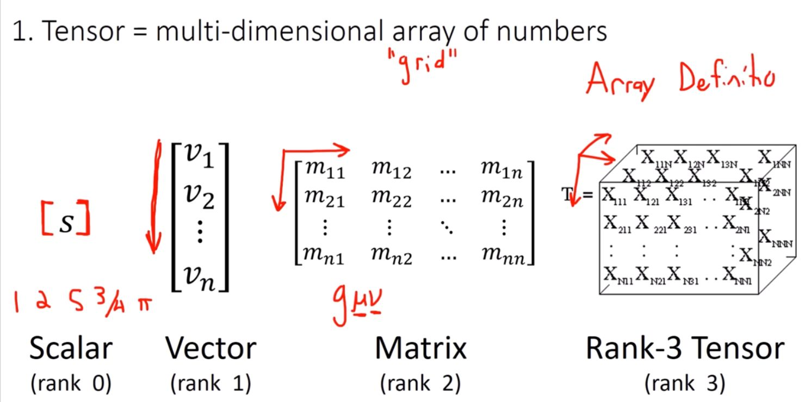

Brain Tumor Detection

This project uses Deep Learning and Numerical Tensor Methods to classify brain tumors. Training data was generated synthetically and used to train convolutional neural networks for image classification.
Back to PortfolioBank Customer Churn

This predictive modeling project aimed to forecast customer churn using historical transaction and demographic data. Techniques included data preprocessing, feature selection, and model evaluation using machine learning algorithms.
Back to PortfolioGeophysical Inversion

This research project used Gaussian Processes for subsurface frontier recovery. Synthetic data was generated with a forward model and Maximum A Posteriori (MAP) estimation was applied to train machine learning models for non-linear ill-posed inverse problems.
Back to Portfolio